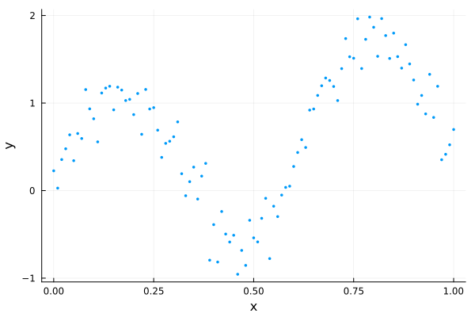

Initializing HMC with Pathfinder
The MCMC warm-up phase
When using MCMC to draw samples from some target distribution, there is often a lengthy warm-up phase with 2 phases:
- converge to the typical set (the region of the target distribution where the bulk of the probability mass is located)
- adapt any tunable parameters of the MCMC sampler (optional)
While (1) often happens fairly quickly, (2) usually requires a lengthy exploration of the typical set to iteratively adapt parameters suitable for further exploration. An example is the widely used windowed adaptation scheme of Hamiltonian Monte Carlo (HMC) in Stan [3], where a step size and positive definite metric (aka mass matrix) are adapted. For posteriors with complex geometry, the adaptation phase can require many evaluations of the gradient of the log density function of the target distribution.
Pathfinder can be used to initialize MCMC, and in particular HMC, in 3 ways:
- Initialize MCMC from one of Pathfinder's draws (replace phase 1 of the warm-up).
- Initialize an HMC metric adaptation from the inverse of the covariance of the multivariate normal approximation (replace the first window of phase 2 of the warm-up).
- Use the inverse of the covariance as the metric without further adaptation (replace phase 2 of the warm-up).
This tutorial demonstrates all three approaches with DynamicHMC.jl and AdvancedHMC.jl. Both of these packages have standalone implementations of adaptive HMC (aka NUTS) and can be used independently of any probabilistic programming language (PPL). Both the Turing and Soss PPLs have some DynamicHMC integration, while Turing also integrates with AdvancedHMC.
For demonstration purposes, we'll use the following dummy data:
using LinearAlgebra, Pathfinder, Random, StatsFuns, StatsPlots
Random.seed!(91)
x = 0:0.01:1
y = @. sin(10x) + randn() * 0.2 + x
scatter(x, y; xlabel="x", ylabel="y", legend=false, msw=0, ms=2)
We'll fit this using a simple polynomial regression model:
\[\begin{aligned} \sigma &\sim \text{Half-Normal}(\mu=0, \sigma=1)\\ \alpha, \beta_j &\sim \mathrm{Normal}(\mu=0, \sigma=1)\\ \hat{y}_i &= \alpha + \sum_{j=1}^J x_i^j \beta_j\\ y_i &\sim \mathrm{Normal}(\mu=\hat{y}_i, \sigma=\sigma) \end{aligned}\]
We just need to implement the log-density function of the resulting posterior.
struct RegressionProblem{X,Z,Y}
x::X
J::Int
z::Z
y::Y
end
function RegressionProblem(x, J, y)
z = x .* (1:J)'
return RegressionProblem(x, J, z, y)
end
function (prob::RegressionProblem)(θ)
(; σ, α, β) = θ
(; z, y) = prob
lp = normlogpdf(σ) + logtwo
lp += normlogpdf(α)
lp += sum(normlogpdf, β)
y_hat = muladd(z, β, α)
lp += sum(eachindex(y_hat, y)) do i
return normlogpdf(y_hat[i], σ, y[i])
end
return lp
end
J = 3
dim = J + 2
model = RegressionProblem(x, J, y)
ndraws = 1_000;DynamicHMC.jl
To use DynamicHMC, we first need to transform our model to an unconstrained space using TransformVariables.jl and wrap it in a type that implements the LogDensityProblems interface (see DynamicHMC's worked example):
using DynamicHMC, ForwardDiff, LogDensityProblems, LogDensityProblemsAD, TransformVariables
using TransformedLogDensities: TransformedLogDensity
transform = as((σ=asℝ₊, α=asℝ, β=as(Array, J)))
P = TransformedLogDensity(transform, model)
∇P = ADgradient(:ForwardDiff, P)ForwardDiff AD wrapper for TransformedLogDensity of dimension 5, w/ chunk size 5Pathfinder can take any object that implements this interface.
result_pf = pathfinder(∇P)Single-path Pathfinder result
tries: 1
draws: 5
fit iteration: 18 (total: 20)
fit ELBO: -117.06 ± 0.2
fit distribution: MvNormal([-0.351937427318366, 0.24690059981732196, 0.05827588220181112, 0.11655176442645986, 0.17482764661077319], [0.005525616745392609 1.2500787338631282e-6 … 0.003866363563675484 -0.002249455741987156; 1.2500787338570567e-6 0.018882026123321478 … -0.0038124487874604124 -0.0061537336271641555; … ; 0.0038663635636754286 -0.003812448787460357 … 0.7413882212509667 -0.44134832838258686; -0.0022494557419871627 -0.0061537336271641555 … -0.44134832838258653 0.26916528229235])init_params = result_pf.draws[:, 1]5-element Vector{Float64}:
-0.252303766693705
0.23151657636329848
0.04255052322452369
-0.3539427863282968
0.5102472286723585inv_metric = result_pf.fit_distribution.Σ5×5 Pathfinder.WoodburyPDMat{Float64, LinearAlgebra.Diagonal{Float64, Vector{Float64}}, Matrix{Float64}, Matrix{Float64}, Pathfinder.WoodburyPDFactorization{Float64, LinearAlgebra.Diagonal{Float64, Vector{Float64}}, LinearAlgebra.QRCompactWYQ{Float64, Matrix{Float64}, Matrix{Float64}}, LinearAlgebra.UpperTriangular{Float64, Matrix{Float64}}}}:
0.00552562 1.25008e-6 -0.00124179 0.00386636 -0.00224946
1.25008e-6 0.018882 -0.00207975 -0.00381245 -0.00615373
-0.00124179 -0.00207975 0.0445296 -0.152624 0.0884712
0.00386636 -0.00381245 -0.152624 0.741388 -0.441348
-0.00224946 -0.00615373 0.0884712 -0.441348 0.269165Initializing from Pathfinder's draws
Here we just need to pass one of the draws as the initial point q:
result_dhmc1 = mcmc_with_warmup(
Random.default_rng(),
∇P,
ndraws;
initialization=(; q=init_params),
reporter=NoProgressReport(),
)(posterior_matrix = [-0.37349960303935353 -0.1971912989675507 … -0.2879073923062627 -0.31212638489894723; 0.2887812059710886 0.21758536014197324 … 0.2856982362970813 0.20004061148118787; … ; 2.072659007920508 1.6780729099822782 … 0.9515247609477305 -0.18381041973007384; -1.0359635608701707 -0.6271758253560255 … 0.08337903587922109 0.4199096549906377], tree_statistics = DynamicHMC.TreeStatisticsNUTS[DynamicHMC.TreeStatisticsNUTS(-116.27932249617794, 6, turning at positions 2:65, 0.9432500349037292, 127, DynamicHMC.Directions(0x90dbebc1)), DynamicHMC.TreeStatisticsNUTS(-117.73324786756423, 6, turning at positions -20:43, 0.9997693116427488, 63, DynamicHMC.Directions(0xd9ea8eeb)), DynamicHMC.TreeStatisticsNUTS(-119.72048166892753, 6, turning at positions -55:8, 0.9796311102781399, 63, DynamicHMC.Directions(0xf88deb48)), DynamicHMC.TreeStatisticsNUTS(-119.49550725218057, 6, turning at positions 4:35, 0.8622380810203586, 95, DynamicHMC.Directions(0x8227b8c3)), DynamicHMC.TreeStatisticsNUTS(-117.06057955874952, 6, turning at positions -51:12, 0.9984227146468969, 63, DynamicHMC.Directions(0x76f6610c)), DynamicHMC.TreeStatisticsNUTS(-115.5277020016799, 6, turning at positions -38:-101, 0.9961715900408105, 127, DynamicHMC.Directions(0xdd6b3c9a)), DynamicHMC.TreeStatisticsNUTS(-116.36522463081992, 6, turning at positions -30:33, 0.9385302958317085, 63, DynamicHMC.Directions(0x8eaa4c21)), DynamicHMC.TreeStatisticsNUTS(-115.4342716968416, 5, turning at positions 12:43, 0.9969736961490342, 63, DynamicHMC.Directions(0x3ea97aab)), DynamicHMC.TreeStatisticsNUTS(-117.45009502833824, 6, turning at positions -57:6, 0.9577842796357713, 63, DynamicHMC.Directions(0xc4adbc06)), DynamicHMC.TreeStatisticsNUTS(-119.2477298908055, 6, turning at positions -25:38, 0.9450482367669635, 63, DynamicHMC.Directions(0x2dc8bae6)) … DynamicHMC.TreeStatisticsNUTS(-118.92215399885957, 6, turning at positions -26:37, 0.9293833093999355, 63, DynamicHMC.Directions(0xd22ee825)), DynamicHMC.TreeStatisticsNUTS(-116.20934296260205, 6, turning at positions -46:17, 0.9760526353691895, 63, DynamicHMC.Directions(0x5c4882d1)), DynamicHMC.TreeStatisticsNUTS(-117.34521601128598, 6, turning at positions -57:6, 0.9377787981714655, 63, DynamicHMC.Directions(0x0387c286)), DynamicHMC.TreeStatisticsNUTS(-118.72962075148415, 6, turning at positions -47:-110, 0.9486589835437756, 127, DynamicHMC.Directions(0x8d736811)), DynamicHMC.TreeStatisticsNUTS(-115.43923796989722, 6, turning at positions -62:1, 0.9919465080223823, 63, DynamicHMC.Directions(0x563dae01)), DynamicHMC.TreeStatisticsNUTS(-116.39125314448293, 6, turning at positions -20:-83, 0.9881977480333696, 127, DynamicHMC.Directions(0xcca678ac)), DynamicHMC.TreeStatisticsNUTS(-119.75489402349707, 6, turning at positions -35:28, 0.736223008003699, 63, DynamicHMC.Directions(0x971cdd1c)), DynamicHMC.TreeStatisticsNUTS(-120.15332164461677, 6, turning at positions -22:-85, 0.9293925948877405, 127, DynamicHMC.Directions(0x2e74bcaa)), DynamicHMC.TreeStatisticsNUTS(-121.1216211829844, 5, turning at positions 53:54, 0.811659380271182, 55, DynamicHMC.Directions(0x18365fbe)), DynamicHMC.TreeStatisticsNUTS(-115.7500683366747, 6, turning at positions -47:16, 0.9554334845581879, 63, DynamicHMC.Directions(0x44b47110))], logdensities = [-115.02097022892269, -116.12219253143533, -117.0005753616018, -116.50836969909389, -115.2426731591539, -113.32666406234988, -113.65767517204614, -112.49903402175096, -116.36875103655912, -115.29271357836475 … -114.43506087161411, -113.74134225425301, -115.63783886715937, -113.76999887941625, -114.58882496550764, -114.52600736352099, -117.31324486047235, -116.6883504373573, -115.10320338164237, -112.63029759308853], κ = Gaussian kinetic energy (Diagonal), √diag(M⁻¹): [0.08193162727279459, 0.1437715188931115, 0.9204930111322072, 0.818923769386777, 0.5780012219271367], ϵ = 0.047966920348948366)When initializing several independent chains from a multipathfinder result, use resample with replace=false to obtain distinct starting points. See Resampling for details.
Initializing metric adaptation from Pathfinder's estimate
To start with Pathfinder's inverse metric estimate, we just need to initialize a DynamicHMC.GaussianKineticEnergy object with it as input:
result_dhmc2 = mcmc_with_warmup(
Random.default_rng(),
∇P,
ndraws;
initialization=(; q=init_params, κ=GaussianKineticEnergy(inv_metric)),
warmup_stages=default_warmup_stages(; M=Symmetric),
reporter=NoProgressReport(),
)(posterior_matrix = [-0.39801371999140917 -0.39573455091156573 … -0.282916065947998 -0.4018690917303275; 0.3407061099674265 0.3634207726914695 … 0.18840617578857363 0.3502997678064447; … ; -0.18843253911305763 1.2834322099898616 … 0.2818606574252151 -0.33957263789941167; 0.7320171976080655 -0.4045396340972114 … -0.16975717354942943 0.8447677277603999], tree_statistics = DynamicHMC.TreeStatisticsNUTS[DynamicHMC.TreeStatisticsNUTS(-115.855203098237, 3, turning at positions -1:6, 0.9678673187759764, 7, DynamicHMC.Directions(0xf7096706)), DynamicHMC.TreeStatisticsNUTS(-115.6532107328159, 3, turning at positions -7:-14, 0.9692832283533153, 15, DynamicHMC.Directions(0x24744d51)), DynamicHMC.TreeStatisticsNUTS(-114.81645465220201, 3, turning at positions -1:-8, 0.9987036068216298, 15, DynamicHMC.Directions(0x3cb95d47)), DynamicHMC.TreeStatisticsNUTS(-116.22494666733925, 2, turning at positions 1:4, 0.9477195006828882, 7, DynamicHMC.Directions(0x2f5f3924)), DynamicHMC.TreeStatisticsNUTS(-114.88944102362447, 3, turning at positions -7:0, 0.813684951746401, 7, DynamicHMC.Directions(0xd8e47f18)), DynamicHMC.TreeStatisticsNUTS(-115.04205167182775, 3, turning at positions -1:6, 0.9999999999999999, 7, DynamicHMC.Directions(0x8ea9bd7e)), DynamicHMC.TreeStatisticsNUTS(-117.29105827359989, 4, turning at positions -10:5, 0.8659465131463684, 15, DynamicHMC.Directions(0x518251a5)), DynamicHMC.TreeStatisticsNUTS(-117.44075708952985, 4, turning at positions 0:15, 0.9771364147572723, 15, DynamicHMC.Directions(0xd018422f)), DynamicHMC.TreeStatisticsNUTS(-114.74624649947602, 3, turning at positions 6:13, 0.994366472926147, 15, DynamicHMC.Directions(0x776e0a0d)), DynamicHMC.TreeStatisticsNUTS(-121.18350853210077, 3, turning at positions -2:5, 0.627243472212985, 7, DynamicHMC.Directions(0xdaa82445)) … DynamicHMC.TreeStatisticsNUTS(-117.41011281196324, 3, turning at positions -2:5, 0.8881684964850037, 7, DynamicHMC.Directions(0x0aa455c5)), DynamicHMC.TreeStatisticsNUTS(-114.86742410365848, 3, turning at positions -5:2, 0.9975859342500693, 7, DynamicHMC.Directions(0x569b7cfa)), DynamicHMC.TreeStatisticsNUTS(-114.71368654332595, 3, turning at positions -4:3, 0.9953873939345098, 7, DynamicHMC.Directions(0xe50d600b)), DynamicHMC.TreeStatisticsNUTS(-116.88084675765482, 3, turning at positions -3:4, 0.7746265905102611, 7, DynamicHMC.Directions(0x9f8379e4)), DynamicHMC.TreeStatisticsNUTS(-115.43008072423092, 3, turning at positions -1:6, 0.9521722470725217, 7, DynamicHMC.Directions(0xbde4c816)), DynamicHMC.TreeStatisticsNUTS(-114.15964473383221, 2, turning at positions -3:-6, 0.9416396855975852, 7, DynamicHMC.Directions(0x41523159)), DynamicHMC.TreeStatisticsNUTS(-115.03224042329902, 3, turning at positions -1:6, 0.8965481747881471, 7, DynamicHMC.Directions(0x6c4ef4de)), DynamicHMC.TreeStatisticsNUTS(-115.50219873819988, 3, turning at positions -3:4, 0.9956307200598519, 7, DynamicHMC.Directions(0x287e1f9c)), DynamicHMC.TreeStatisticsNUTS(-116.27348392214058, 2, turning at positions -2:1, 0.7443260682988538, 3, DynamicHMC.Directions(0x6685e395)), DynamicHMC.TreeStatisticsNUTS(-114.96910290414267, 4, turning at positions -13:2, 0.9942268502610487, 15, DynamicHMC.Directions(0xffc1c762))], logdensities = [-113.46077119931311, -113.79899870080966, -113.94408128644581, -112.59257439801681, -114.05324697708338, -113.81936148707317, -115.20120281216573, -113.76346500939958, -113.4053134761625, -119.66043694929805 … -113.37907341272135, -113.45770408698799, -113.85427794514459, -112.90591719621274, -112.8815465227368, -112.51499519551822, -114.13059291561191, -113.66686995617859, -114.04725314019953, -113.89721747321983], κ = Gaussian kinetic energy (Symmetric), √diag(M⁻¹): [0.07323530389622226, 0.13426345172119533, 1.0200519492656468, 0.8667847220547741, 0.588868204282604], ϵ = 0.37729525785899604)We also specified that DynamicHMC should tune a dense Symmetric matrix. However, we could also have requested a Diagonal metric.
Use Pathfinder's metric estimate for sampling
To turn off metric adaptation entirely and use Pathfinder's estimate, we just set the number and size of the metric adaptation windows to 0.
result_dhmc3 = mcmc_with_warmup(
Random.default_rng(),
∇P,
ndraws;
initialization=(; q=init_params, κ=GaussianKineticEnergy(inv_metric)),
warmup_stages=default_warmup_stages(; middle_steps=0, doubling_stages=0),
reporter=NoProgressReport(),
)(posterior_matrix = [-0.4934245691228641 -0.2136459239619803 … -0.404193968693527 -0.2841855150981563; 0.24517093246720942 0.1633636441767151 … 0.22073703817310225 0.13527847515895153; … ; 2.0218847210430364 -1.5908720273408752 … -0.22344812568604921 -0.11586121570625574; -1.2095436584362407 0.8887696262213342 … -0.03408836579496577 0.061647185857624354], tree_statistics = DynamicHMC.TreeStatisticsNUTS[DynamicHMC.TreeStatisticsNUTS(-119.33160999928427, 2, turning at positions 0:3, 0.7406988197470777, 3, DynamicHMC.Directions(0xef92eb37)), DynamicHMC.TreeStatisticsNUTS(-118.4277296711149, 3, turning at positions -2:5, 0.9999999999999999, 7, DynamicHMC.Directions(0x5529588d)), DynamicHMC.TreeStatisticsNUTS(-117.1686208714992, 2, turning at positions -2:1, 0.9999999999999999, 3, DynamicHMC.Directions(0x12fa8f19)), DynamicHMC.TreeStatisticsNUTS(-114.6673901832699, 3, turning at positions -1:6, 0.9817981049831696, 7, DynamicHMC.Directions(0x4b3fbdc6)), DynamicHMC.TreeStatisticsNUTS(-116.60312080669256, 2, turning at positions -3:0, 0.8313346051858944, 3, DynamicHMC.Directions(0x49811b74)), DynamicHMC.TreeStatisticsNUTS(-115.98725586464369, 3, turning at positions 8:15, 0.9997726901843381, 15, DynamicHMC.Directions(0xdc5b241f)), DynamicHMC.TreeStatisticsNUTS(-121.33984959867361, 4, turning at positions -21:-28, 0.7017039231597799, 31, DynamicHMC.Directions(0x1fb493c3)), DynamicHMC.TreeStatisticsNUTS(-119.74595613667246, 2, turning at positions -1:2, 0.9999999999999999, 3, DynamicHMC.Directions(0xf051a68e)), DynamicHMC.TreeStatisticsNUTS(-119.04788329333766, 2, turning at positions -2:-5, 0.7942209764071197, 7, DynamicHMC.Directions(0xcca8ad02)), DynamicHMC.TreeStatisticsNUTS(-117.63987134224368, 2, turning at positions -2:1, 0.9999999999999999, 3, DynamicHMC.Directions(0x2b86cbd5)) … DynamicHMC.TreeStatisticsNUTS(-118.0228190067548, 4, turning at positions 4:11, 0.9988944745990677, 23, DynamicHMC.Directions(0x2b0ba7d3)), DynamicHMC.TreeStatisticsNUTS(-117.34290378229105, 3, turning at positions 0:7, 0.9100573686917323, 7, DynamicHMC.Directions(0x8ca199df)), DynamicHMC.TreeStatisticsNUTS(-119.87330563868129, 2, turning at positions -2:1, 0.5711990235861787, 3, DynamicHMC.Directions(0x3200a539)), DynamicHMC.TreeStatisticsNUTS(-116.57214093909259, 3, turning at positions -2:5, 0.9641270074277754, 7, DynamicHMC.Directions(0xc79d7445)), DynamicHMC.TreeStatisticsNUTS(-118.45816928391396, 4, turning at positions -16:-23, 0.9993809646020172, 31, DynamicHMC.Directions(0x05e01e08)), DynamicHMC.TreeStatisticsNUTS(-119.03786270209473, 2, turning at positions 0:3, 0.8800291666644445, 3, DynamicHMC.Directions(0xf80cefdf)), DynamicHMC.TreeStatisticsNUTS(-117.12229403655127, 3, turning at positions -2:5, 0.9716123464186002, 7, DynamicHMC.Directions(0x52600715)), DynamicHMC.TreeStatisticsNUTS(-116.12205582340263, 3, turning at positions 2:9, 0.9790168052509703, 15, DynamicHMC.Directions(0xb42f8829)), DynamicHMC.TreeStatisticsNUTS(-115.64381889281835, 2, turning at positions -3:0, 0.9566638858365247, 3, DynamicHMC.Directions(0xcec34e64)), DynamicHMC.TreeStatisticsNUTS(-116.08182947875792, 2, turning at positions 1:4, 0.8002033097573512, 7, DynamicHMC.Directions(0x3f66fe1c))], logdensities = [-117.12791562773417, -116.6453243809293, -113.57947205627178, -113.50733191757614, -114.70205700493554, -114.16716125863958, -118.20191827883818, -114.94395305867636, -117.03073601729233, -116.14909098277234 … -114.74560378189676, -113.51823290210702, -114.56736978955921, -114.29060097462143, -116.21306901850694, -115.77234822492362, -114.5519249126371, -114.62329574489966, -113.34910982957261, -113.74949591910563], κ = Gaussian kinetic energy (WoodburyPDMat), √diag(M⁻¹): [0.074334492299286, 0.13741188494202922, 0.21102037051756514, 0.8610390358462076, 0.5188114130320862], ϵ = 0.7743978645059298)AdvancedHMC.jl
Similar to Pathfinder and DynamicHMC, AdvancedHMC can also work with a LogDensityProblem:
using AdvancedHMC
nadapts = 500;Initializing from Pathfinder's draws
metric = DiagEuclideanMetric(dim)
hamiltonian = Hamiltonian(metric, ∇P)
ϵ = find_good_stepsize(hamiltonian, init_params)
integrator = Leapfrog(ϵ)
kernel = HMCKernel(Trajectory{MultinomialTS}(integrator, GeneralisedNoUTurn()))
adaptor = StepSizeAdaptor(0.8, integrator)
samples_ahmc1, stats_ahmc1 = sample(
hamiltonian,
kernel,
init_params,
ndraws + nadapts,
adaptor,
nadapts;
drop_warmup=true,
progress=false,
)([[-0.3287060616132964, -0.08416954824588459, -1.0055512058665077, 0.11628169930642546, 0.7279337284844125], [-0.38745613302015186, 0.13208023501635366, -1.0407496649702281, 0.1019622682088714, 0.634090820736543], [-0.27616375426646705, 0.3472555989523336, -0.33370174004110625, 0.11917212692923775, 0.26993740670070493], [-0.34168474752938915, 0.1841271117321333, -0.4945474817223548, -0.07960560057401989, 0.5213591910826483], [-0.3521490117463539, 0.23100741215468049, -1.2982831573056288, 0.6414182112501227, 0.3731851231379527], [-0.33573906587291974, 0.19113318995882428, -1.2240761685605548, 1.054816495481835, 0.03436171444532728], [-0.36370263531861824, 0.3051525195953481, 1.1944730336640197, 0.5661313959069929, -0.5233184847164596], [-0.36603416544698253, 0.3188922282658139, 1.215772652973432, 0.06277677156150646, -0.18094780963375906], [-0.44623595737392724, 0.3713831208837181, -1.075383560471649, 0.3314479509665185, 0.37904430744543083], [-0.4849376248569447, 0.41175537172576404, -1.0986440918051499, 0.33711414789951294, 0.3279550844658783] … [-0.15778836855789635, 0.4136304162855824, 1.153101842731068, 0.8780741449999967, -0.8533558358449164], [-0.2808944894236408, 0.5070828153078116, 1.144076074063038, 0.8842861093130192, -0.7720232284304112], [-0.2819838725440277, 0.6048983424877974, 0.9151284838644596, 0.8648448235772713, -0.8234514172610934], [-0.2751526303161125, 0.6200667099058045, 1.0760188383444818, -0.263634814030615, -0.0750948607645748], [-0.32503940262190884, -0.08555294612833564, 1.3945818716798708, 0.11789175170468295, -0.10333314458973125], [-0.35906525726194455, 0.2287966855279474, 1.3462662924689066, 0.055100526536319916, -0.21637389697402312], [-0.36902389210671677, 0.10111202262791885, 0.9723983629139877, 0.05908048359069153, -0.025352676880066677], [-0.3418841158380086, 0.13646408684781391, 0.96058418987819, 0.05926511123041796, 0.01757367771098392], [-0.3262613773364157, 0.08678898519818778, 0.9626862162854009, 0.04142262605074668, -0.06183050539519888], [-0.25154835653162155, 0.062364381055897, 0.9687022986432731, 0.041140606280365304, 0.021515462779049428]], NamedTuple[(n_steps = 15, is_accept = true, acceptance_rate = 0.936969098666735, log_density = -115.93680028410147, hamiltonian_energy = 118.45269630200325, hamiltonian_energy_error = -0.007651822563403243, max_hamiltonian_energy_error = 0.18563425739506556, tree_depth = 3, numerical_error = false, step_size = 0.04013921103101535, nom_step_size = 0.04013921103101535, is_adapt = false), (n_steps = 7, is_accept = true, acceptance_rate = 0.9904693745445787, log_density = -113.50831000140809, hamiltonian_energy = 116.7607812138338, hamiltonian_energy_error = -0.031297787845119274, max_hamiltonian_energy_error = -0.050412022664446, tree_depth = 3, numerical_error = false, step_size = 0.04013921103101535, nom_step_size = 0.04013921103101535, is_adapt = false), (n_steps = 51, is_accept = true, acceptance_rate = 0.8307898930951095, log_density = -113.00343960620722, hamiltonian_energy = 115.39257723265047, hamiltonian_energy_error = 0.06361351417538685, max_hamiltonian_energy_error = 0.4770509552800206, tree_depth = 5, numerical_error = false, step_size = 0.04013921103101535, nom_step_size = 0.04013921103101535, is_adapt = false), (n_steps = 23, is_accept = true, acceptance_rate = 0.9726234039089805, log_density = -112.41393132501285, hamiltonian_energy = 114.4934072045033, hamiltonian_energy_error = -0.09300949655542468, max_hamiltonian_energy_error = 0.1250848516112768, tree_depth = 4, numerical_error = false, step_size = 0.04013921103101535, nom_step_size = 0.04013921103101535, is_adapt = false), (n_steps = 63, is_accept = true, acceptance_rate = 0.6287607791946466, log_density = -115.54782697642298, hamiltonian_energy = 115.95192315082012, hamiltonian_energy_error = 1.040836643534007, max_hamiltonian_energy_error = 1.087843299064076, tree_depth = 6, numerical_error = false, step_size = 0.04013921103101535, nom_step_size = 0.04013921103101535, is_adapt = false), (n_steps = 127, is_accept = true, acceptance_rate = 0.949478586931244, log_density = -113.71288844833634, hamiltonian_energy = 115.7349774498332, hamiltonian_energy_error = -0.9592749748224065, max_hamiltonian_energy_error = -1.155429114307438, tree_depth = 6, numerical_error = false, step_size = 0.04013921103101535, nom_step_size = 0.04013921103101535, is_adapt = false), (n_steps = 127, is_accept = true, acceptance_rate = 0.8992554665023571, log_density = -113.1924427985768, hamiltonian_energy = 115.01502712280215, hamiltonian_energy_error = -0.10219778822808223, max_hamiltonian_energy_error = 0.3030824706684143, tree_depth = 6, numerical_error = false, step_size = 0.04013921103101535, nom_step_size = 0.04013921103101535, is_adapt = false), (n_steps = 63, is_accept = true, acceptance_rate = 0.8368014508751302, log_density = -113.24999196771832, hamiltonian_energy = 114.1171262053168, hamiltonian_energy_error = 0.13307297240449145, max_hamiltonian_energy_error = 0.38410245149802336, tree_depth = 6, numerical_error = false, step_size = 0.04013921103101535, nom_step_size = 0.04013921103101535, is_adapt = false), (n_steps = 127, is_accept = true, acceptance_rate = 0.9569147567970551, log_density = -114.56931903554421, hamiltonian_energy = 115.57862130360351, hamiltonian_energy_error = 0.14159093620449426, max_hamiltonian_energy_error = 0.23738204802920393, tree_depth = 7, numerical_error = false, step_size = 0.04013921103101535, nom_step_size = 0.04013921103101535, is_adapt = false), (n_steps = 7, is_accept = true, acceptance_rate = 0.983883273060606, log_density = -115.65818494087624, hamiltonian_energy = 116.93595681200138, hamiltonian_energy_error = -0.1384322116977188, max_hamiltonian_energy_error = -0.26858491499748993, tree_depth = 3, numerical_error = false, step_size = 0.04013921103101535, nom_step_size = 0.04013921103101535, is_adapt = false) … (n_steps = 11, is_accept = true, acceptance_rate = 0.38426337640589237, log_density = -118.45788850639127, hamiltonian_energy = 120.28240413809894, hamiltonian_energy_error = 1.0603801292658375, max_hamiltonian_energy_error = 2.1369846625831173, tree_depth = 3, numerical_error = false, step_size = 0.04013921103101535, nom_step_size = 0.04013921103101535, is_adapt = false), (n_steps = 3, is_accept = true, acceptance_rate = 1.0, log_density = -116.29840416631353, hamiltonian_energy = 119.10161076582094, hamiltonian_energy_error = -0.12204500628681103, max_hamiltonian_energy_error = -0.2825577577382461, tree_depth = 2, numerical_error = false, step_size = 0.04013921103101535, nom_step_size = 0.04013921103101535, is_adapt = false), (n_steps = 15, is_accept = true, acceptance_rate = 0.888627552689068, log_density = -116.98504282065976, hamiltonian_energy = 119.55005042445559, hamiltonian_energy_error = -0.32517280836860607, max_hamiltonian_energy_error = -0.4574913868636372, tree_depth = 4, numerical_error = false, step_size = 0.04013921103101535, nom_step_size = 0.04013921103101535, is_adapt = false), (n_steps = 47, is_accept = true, acceptance_rate = 0.9821538004648259, log_density = -116.55182899470944, hamiltonian_energy = 117.98311138281139, hamiltonian_energy_error = 0.027617763190349365, max_hamiltonian_energy_error = -0.17547488478251694, tree_depth = 5, numerical_error = false, step_size = 0.04013921103101535, nom_step_size = 0.04013921103101535, is_adapt = false), (n_steps = 15, is_accept = true, acceptance_rate = 0.9022800921305273, log_density = -115.84060147495084, hamiltonian_energy = 118.02577809348251, hamiltonian_energy_error = -0.15071431637667843, max_hamiltonian_energy_error = 0.2713340126741741, tree_depth = 4, numerical_error = false, step_size = 0.04013921103101535, nom_step_size = 0.04013921103101535, is_adapt = false), (n_steps = 7, is_accept = true, acceptance_rate = 0.9944461668820205, log_density = -113.03519264751135, hamiltonian_energy = 116.12737599319273, hamiltonian_energy_error = -0.029588998316498305, max_hamiltonian_energy_error = -0.044412153186542014, tree_depth = 3, numerical_error = false, step_size = 0.04013921103101535, nom_step_size = 0.04013921103101535, is_adapt = false), (n_steps = 23, is_accept = true, acceptance_rate = 0.4247762489235179, log_density = -113.13271592189109, hamiltonian_energy = 117.22235837552203, hamiltonian_energy_error = -0.02482853875379476, max_hamiltonian_energy_error = 2.3494705751612344, tree_depth = 4, numerical_error = false, step_size = 0.04013921103101535, nom_step_size = 0.04013921103101535, is_adapt = false), (n_steps = 23, is_accept = true, acceptance_rate = 0.8377836168176557, log_density = -113.58200505429127, hamiltonian_energy = 114.37245384530166, hamiltonian_energy_error = 0.30737327058150754, max_hamiltonian_energy_error = 0.379532646032942, tree_depth = 4, numerical_error = false, step_size = 0.04013921103101535, nom_step_size = 0.04013921103101535, is_adapt = false), (n_steps = 3, is_accept = true, acceptance_rate = 0.562139541779605, log_density = -114.44931859175277, hamiltonian_energy = 115.45194278061487, hamiltonian_energy_error = 0.32154167417857593, max_hamiltonian_energy_error = 0.8797003779602619, tree_depth = 2, numerical_error = false, step_size = 0.04013921103101535, nom_step_size = 0.04013921103101535, is_adapt = false), (n_steps = 3, is_accept = true, acceptance_rate = 0.9132700579642609, log_density = -114.20214855891483, hamiltonian_energy = 115.53516187588485, hamiltonian_energy_error = -0.3575725979707869, max_hamiltonian_energy_error = -0.3575725979707869, tree_depth = 2, numerical_error = false, step_size = 0.04013921103101535, nom_step_size = 0.04013921103101535, is_adapt = false)])Initializing metric adaptation from Pathfinder's estimate
We can't start with Pathfinder's inverse metric estimate directly. Instead we need to first extract its diagonal for a DiagonalEuclideanMetric or make it dense for a DenseEuclideanMetric:
metric = DenseEuclideanMetric(Matrix(inv_metric))
hamiltonian = Hamiltonian(metric, ∇P)
ϵ = find_good_stepsize(hamiltonian, init_params)
integrator = Leapfrog(ϵ)
kernel = HMCKernel(Trajectory{MultinomialTS}(integrator, GeneralisedNoUTurn()))
adaptor = StepSizeAdaptor(0.8, integrator)
samples_ahmc2, stats_ahmc2 = sample(
hamiltonian,
kernel,
init_params,
ndraws + nadapts,
adaptor,
nadapts;
drop_warmup=true,
progress=false,
)([[-0.31603918362524225, 0.15346405735407517, -0.6302505443925354, 0.5413131132120599, 0.1830890760059723], [-0.3232595616074046, 0.17238482895921425, 0.09018871258944731, 0.2703615571291831, 0.09589816591825007], [-0.3685802408725606, 0.37422674296288827, 0.2819789603600514, -0.9026496194985962, 0.7426504315209621], [-0.18082821894888376, 0.1604210919940543, 0.2156991176119059, 0.07827741182111314, 0.21907502620193864], [-0.44410941979519913, 0.4098590857334953, 0.37695260657196544, -0.1186394699685111, 0.12566516672095562], [-0.2233126357718277, 0.06340627733563668, -0.04072782950459745, 0.4252479606503377, 0.11165600560550776], [-0.3112930034671404, 0.11850468103128525, 0.2230779333164516, -0.8692542832077541, 0.8524277599536347], [-0.38983752352109474, 0.34707079866068513, -0.33108900878929165, 1.0541105381229963, -0.38435552444759646], [-0.3849951849413933, 0.3643374868585317, -0.16998296218014922, 0.2915969849657466, 0.06686512709153347], [-0.37236133008965905, 0.3037963714536474, 1.0831165564843215, 0.16231049449120818, -0.22280640546728464] … [-0.27089788554944855, 0.04973058214642369, 0.3903868845019243, -0.614576527683181, 0.5911080987564165], [-0.40255669568629726, 0.5690379488515284, 0.05849446260491481, 0.6756680979529038, -0.3599702505135367], [-0.2722723719054383, -0.08520242146548718, -0.10491118186374358, -0.5043264472100781, 0.7936698284578385], [-0.26781774040376694, 0.35097650807800795, -1.3654759363467917, 0.7707332065107518, 0.198466563302967], [-0.4786982775684122, 0.1815289518070031, -1.2693865491044254, -0.17409222087895576, 0.8805861613512322], [-0.3887040444670423, 0.24907462738159342, -1.0942769584017373, -1.1337710361710756, 1.3358279399747892], [-0.4797502288218809, 0.29872855626703176, -1.2742675136710728, 0.17196043209800682, 0.5532307648624574], [-0.24728187662073475, 0.4692030219489274, -0.9222772146594743, -0.05907693578624697, 0.5120199722303698], [-0.40676182286272616, 0.4298732998795165, -1.0262240691670825, 0.358468402205385, 0.28247442056953664], [-0.26535210412975485, 0.3990121506498973, -1.1844644697736977, 1.2732166357670995, -0.22176794953256407]], NamedTuple[(n_steps = 7, is_accept = true, acceptance_rate = 0.9115055346014928, log_density = -112.80620382114009, hamiltonian_energy = 113.77044921402646, hamiltonian_energy_error = 0.00210287642171636, max_hamiltonian_energy_error = 0.17321098320449835, tree_depth = 2, numerical_error = false, step_size = 0.9552433425280681, nom_step_size = 0.9552433425280681, is_adapt = false), (n_steps = 23, is_accept = true, acceptance_rate = 0.8769336505473404, log_density = -112.30668694397228, hamiltonian_energy = 114.32707741277837, hamiltonian_energy_error = -0.0543368402047264, max_hamiltonian_energy_error = 0.256717034667588, tree_depth = 4, numerical_error = false, step_size = 0.9552433425280681, nom_step_size = 0.9552433425280681, is_adapt = false), (n_steps = 3, is_accept = true, acceptance_rate = 0.7014930512512967, log_density = -113.46442255527246, hamiltonian_energy = 114.56666187525437, hamiltonian_energy_error = 0.23118989923972322, max_hamiltonian_energy_error = 0.4837840004128111, tree_depth = 1, numerical_error = false, step_size = 0.9552433425280681, nom_step_size = 0.9552433425280681, is_adapt = false), (n_steps = 3, is_accept = true, acceptance_rate = 0.7263513177178299, log_density = -115.04578017205054, hamiltonian_energy = 116.26304029767009, hamiltonian_energy_error = 0.36679046267306603, max_hamiltonian_energy_error = 0.36679046267306603, tree_depth = 2, numerical_error = false, step_size = 0.9552433425280681, nom_step_size = 0.9552433425280681, is_adapt = false), (n_steps = 3, is_accept = true, acceptance_rate = 0.858417811395274, log_density = -114.02646574588003, hamiltonian_energy = 117.74641331338313, hamiltonian_energy_error = -0.44449134327916795, max_hamiltonian_energy_error = 0.5529445801830093, tree_depth = 2, numerical_error = false, step_size = 0.9552433425280681, nom_step_size = 0.9552433425280681, is_adapt = false), (n_steps = 15, is_accept = true, acceptance_rate = 0.8154917217608538, log_density = -114.426990594851, hamiltonian_energy = 116.87046990982856, hamiltonian_energy_error = 0.2332446876006884, max_hamiltonian_energy_error = 0.4575284717000585, tree_depth = 3, numerical_error = false, step_size = 0.9552433425280681, nom_step_size = 0.9552433425280681, is_adapt = false), (n_steps = 3, is_accept = true, acceptance_rate = 0.9589446456563051, log_density = -113.39871298000226, hamiltonian_energy = 115.5509418290925, hamiltonian_energy_error = -0.19702549675798764, max_hamiltonian_energy_error = -0.44549750738445937, tree_depth = 2, numerical_error = false, step_size = 0.9552433425280681, nom_step_size = 0.9552433425280681, is_adapt = false), (n_steps = 3, is_accept = true, acceptance_rate = 0.9851841529629843, log_density = -113.24023892040503, hamiltonian_energy = 113.8640762600987, hamiltonian_energy_error = -0.04413154586971757, max_hamiltonian_energy_error = -0.29532989181818436, tree_depth = 2, numerical_error = false, step_size = 0.9552433425280681, nom_step_size = 0.9552433425280681, is_adapt = false), (n_steps = 3, is_accept = true, acceptance_rate = 1.0, log_density = -112.64310002638115, hamiltonian_energy = 113.32563609191959, hamiltonian_energy_error = -0.13513589919030267, max_hamiltonian_energy_error = -0.16956087445726098, tree_depth = 2, numerical_error = false, step_size = 0.9552433425280681, nom_step_size = 0.9552433425280681, is_adapt = false), (n_steps = 15, is_accept = true, acceptance_rate = 0.87353092685747, log_density = -112.80853062154554, hamiltonian_energy = 115.49119606723829, hamiltonian_energy_error = -0.0782934254119283, max_hamiltonian_energy_error = 0.3705433510445886, tree_depth = 3, numerical_error = false, step_size = 0.9552433425280681, nom_step_size = 0.9552433425280681, is_adapt = false) … (n_steps = 15, is_accept = true, acceptance_rate = 0.9917781442940966, log_density = -114.8739239917442, hamiltonian_energy = 118.65621418966239, hamiltonian_energy_error = -0.5353496529381374, max_hamiltonian_energy_error = -1.0648756408895252, tree_depth = 3, numerical_error = false, step_size = 0.9552433425280681, nom_step_size = 0.9552433425280681, is_adapt = false), (n_steps = 3, is_accept = true, acceptance_rate = 0.8896117344917397, log_density = -115.65832117273695, hamiltonian_energy = 116.91859419846206, hamiltonian_energy_error = 0.1709869460600828, max_hamiltonian_energy_error = -0.3890990011927755, tree_depth = 2, numerical_error = false, step_size = 0.9552433425280681, nom_step_size = 0.9552433425280681, is_adapt = false), (n_steps = 11, is_accept = true, acceptance_rate = 0.9802463913644242, log_density = -115.6153865130389, hamiltonian_energy = 116.81575197151999, hamiltonian_energy_error = -0.06841458781816812, max_hamiltonian_energy_error = -0.7544817077282033, tree_depth = 3, numerical_error = false, step_size = 0.9552433425280681, nom_step_size = 0.9552433425280681, is_adapt = false), (n_steps = 15, is_accept = true, acceptance_rate = 0.9876453702106265, log_density = -114.57525074085521, hamiltonian_energy = 119.28220089549625, hamiltonian_energy_error = -0.3962818094537113, max_hamiltonian_energy_error = -0.5359990424223184, tree_depth = 3, numerical_error = false, step_size = 0.9552433425280681, nom_step_size = 0.9552433425280681, is_adapt = false), (n_steps = 7, is_accept = true, acceptance_rate = 0.8018803608123241, log_density = -115.69631252180451, hamiltonian_energy = 117.63850492834104, hamiltonian_energy_error = 0.15514550566287255, max_hamiltonian_energy_error = 0.4812695305116961, tree_depth = 2, numerical_error = false, step_size = 0.9552433425280681, nom_step_size = 0.9552433425280681, is_adapt = false), (n_steps = 3, is_accept = true, acceptance_rate = 0.8234751924596005, log_density = -115.35605689864485, hamiltonian_energy = 118.3790124123899, hamiltonian_energy_error = 0.045941267146417886, max_hamiltonian_energy_error = 0.3303596294480826, tree_depth = 2, numerical_error = false, step_size = 0.9552433425280681, nom_step_size = 0.9552433425280681, is_adapt = false), (n_steps = 3, is_accept = true, acceptance_rate = 0.9191810514574162, log_density = -114.92154395588248, hamiltonian_energy = 117.52342008283809, hamiltonian_energy_error = -0.10915184240383269, max_hamiltonian_energy_error = 0.16289254960989297, tree_depth = 2, numerical_error = false, step_size = 0.9552433425280681, nom_step_size = 0.9552433425280681, is_adapt = false), (n_steps = 11, is_accept = true, acceptance_rate = 0.8384829237331684, log_density = -114.72969902184761, hamiltonian_energy = 117.97688239447083, hamiltonian_energy_error = 0.083170553171243, max_hamiltonian_energy_error = 0.3208381819361392, tree_depth = 3, numerical_error = false, step_size = 0.9552433425280681, nom_step_size = 0.9552433425280681, is_adapt = false), (n_steps = 3, is_accept = true, acceptance_rate = 0.9165284873493457, log_density = -113.98939211364019, hamiltonian_energy = 116.30196470085518, hamiltonian_energy_error = -0.1473472016189845, max_hamiltonian_energy_error = 0.2882349425255626, tree_depth = 2, numerical_error = false, step_size = 0.9552433425280681, nom_step_size = 0.9552433425280681, is_adapt = false), (n_steps = 3, is_accept = true, acceptance_rate = 0.735139156758056, log_density = -115.15990447527251, hamiltonian_energy = 116.75358594408223, hamiltonian_energy_error = 0.32044545749788256, max_hamiltonian_energy_error = 0.430961356344298, tree_depth = 2, numerical_error = false, step_size = 0.9552433425280681, nom_step_size = 0.9552433425280681, is_adapt = false)])Use Pathfinder's metric estimate for sampling
To use Pathfinder's metric with no metric adaptation, we can pass it directly to AdvancedHMC.RankUpdateEuclideanMetric:
nadapts = 75
metric = AdvancedHMC.RankUpdateEuclideanMetric(inv_metric)
hamiltonian = Hamiltonian(metric, ∇P)
ϵ = find_good_stepsize(hamiltonian, init_params)
integrator = Leapfrog(ϵ)
kernel = HMCKernel(Trajectory{MultinomialTS}(integrator, GeneralisedNoUTurn()))
adaptor = StepSizeAdaptor(0.8, integrator)
samples_ahmc3, stats_ahmc3 = sample(
hamiltonian,
kernel,
init_params,
ndraws + nadapts,
adaptor,
nadapts;
drop_warmup=true,
progress=false,
)([[-0.3754071411109591, 0.16592209960990606, 1.4213947691484945, 1.1540711609843128, -0.9414565133203656], [-0.3629024507202032, 0.2933507162211464, 1.7273308035820314, -0.33065873404662827, -0.08885044180714924], [-0.35321823268095504, 0.1975891729609464, 1.6550461974796604, -0.04786615849047421, -0.10309553314803584], [-0.32669821290654094, 0.11672231099635583, 0.5137766318735206, 0.7150596171457677, -0.4419724558530863], [-0.19417478692556078, 0.00815296137058144, 0.7503695592205195, 0.8477760357024338, -0.42405985940785007], [-0.374922897701495, 0.1495472082560625, 0.956850618954661, -0.67435252526604, 0.4248720865618318], [-0.317244907702989, 0.33418811525490794, -0.4930710074904915, 0.66555212240252, -0.05910389162306309], [-0.3237567919648464, 0.19759473635849828, -0.20433009210613493, -0.3875959902011825, 0.6959559237390869], [-0.30504338977432177, 0.348215654883533, 1.1712366668459444, 0.3932007711928844, -0.4218036684952535], [-0.37417340447096115, 0.15252828400863316, 1.7431492647731184, -0.06366923774497524, -0.23026817611230715] … [-0.35031006892368743, 0.3891097655988009, -0.3263035820760666, 0.7144261954529172, -0.1653293329119856], [-0.3038815469947104, 0.09997217425823385, -0.163883018247082, -0.45319306330307585, 0.7001918823310782], [-0.3179659468832324, 0.05772739833822568, -0.49888784541348086, -0.5143173184019318, 0.887284243755903], [-0.46057487401542496, 0.22454077506417888, 0.8747635007006324, 0.2575375531536199, -0.17484656437669316], [-0.3900795556348328, 0.23281457140993292, -0.16586496432607675, 0.7816251935936431, -0.19097214266296153], [-0.4159196637758096, 0.3798478874462666, -0.037793897008105204, -0.035959054563608706, 0.21331639927297522], [-0.2646354266716554, 0.1016605117967107, -0.0483717383155136, 0.31955003747656713, 0.17800835163274858], [-0.3486735736204116, 0.1580326060921357, 0.139605287533007, -0.1720235126688191, 0.42876863661127806], [-0.33971717711108423, 0.3707338113131413, 0.2136256826149556, -0.5532301822931275, 0.5897560634035286], [-0.3456109695786668, 0.5362110526638011, 0.5170748404764789, -0.27681043234105557, 0.17380680866942516]], NamedTuple[(n_steps = 3, is_accept = true, acceptance_rate = 0.7512329779395848, log_density = -114.43403799365201, hamiltonian_energy = 118.89305139057532, hamiltonian_energy_error = -0.0986381960873075, max_hamiltonian_energy_error = 0.4724460047046506, tree_depth = 2, numerical_error = false, step_size = 0.7662581145667926, nom_step_size = 0.7662581145667926, is_adapt = false), (n_steps = 3, is_accept = true, acceptance_rate = 0.9903098046237732, log_density = -113.76528213047213, hamiltonian_energy = 114.81630503356185, hamiltonian_energy_error = -0.09650248986758925, max_hamiltonian_energy_error = -0.09650248986758925, tree_depth = 2, numerical_error = false, step_size = 0.7662581145667926, nom_step_size = 0.7662581145667926, is_adapt = false), (n_steps = 3, is_accept = true, acceptance_rate = 0.6436919077845132, log_density = -117.91864048595477, hamiltonian_energy = 118.70060792387883, hamiltonian_energy_error = 0.6367016732848043, max_hamiltonian_energy_error = 0.6367016732848043, tree_depth = 2, numerical_error = false, step_size = 0.7662581145667926, nom_step_size = 0.7662581145667926, is_adapt = false), (n_steps = 31, is_accept = true, acceptance_rate = 0.9815168332883489, log_density = -118.03072187877805, hamiltonian_energy = 121.34584393800239, hamiltonian_energy_error = 0.12120854766021694, max_hamiltonian_energy_error = -0.5689969930997592, tree_depth = 4, numerical_error = false, step_size = 0.7662581145667926, nom_step_size = 0.7662581145667926, is_adapt = false), (n_steps = 11, is_accept = true, acceptance_rate = 0.8248844748031701, log_density = -116.12227787705214, hamiltonian_energy = 124.62079898515819, hamiltonian_energy_error = -0.2844008759506522, max_hamiltonian_energy_error = -0.8451211115235964, tree_depth = 3, numerical_error = false, step_size = 0.7662581145667926, nom_step_size = 0.7662581145667926, is_adapt = false), (n_steps = 3, is_accept = true, acceptance_rate = 1.0, log_density = -113.35429371056063, hamiltonian_energy = 116.47820119424112, hamiltonian_energy_error = -0.37258927740526815, max_hamiltonian_energy_error = -0.37258927740526815, tree_depth = 2, numerical_error = false, step_size = 0.7662581145667926, nom_step_size = 0.7662581145667926, is_adapt = false), (n_steps = 31, is_accept = true, acceptance_rate = 0.9983049502990358, log_density = -112.7268778618797, hamiltonian_energy = 114.17022610895197, hamiltonian_energy_error = -0.061304438556732066, max_hamiltonian_energy_error = -0.11146662872357638, tree_depth = 4, numerical_error = false, step_size = 0.7662581145667926, nom_step_size = 0.7662581145667926, is_adapt = false), (n_steps = 3, is_accept = true, acceptance_rate = 0.8849978955273229, log_density = -114.05544693745735, hamiltonian_energy = 114.48829046168159, hamiltonian_energy_error = 0.17624979250813055, max_hamiltonian_energy_error = 0.18080137478642655, tree_depth = 2, numerical_error = false, step_size = 0.7662581145667926, nom_step_size = 0.7662581145667926, is_adapt = false), (n_steps = 31, is_accept = true, acceptance_rate = 0.9969332466755517, log_density = -113.39297143987694, hamiltonian_energy = 116.02713467672878, hamiltonian_energy_error = -0.177264129966062, max_hamiltonian_energy_error = -0.22710513823847123, tree_depth = 4, numerical_error = false, step_size = 0.7662581145667926, nom_step_size = 0.7662581145667926, is_adapt = false), (n_steps = 11, is_accept = true, acceptance_rate = 0.9042407295701107, log_density = -113.92024236555191, hamiltonian_energy = 116.08703224665052, hamiltonian_energy_error = -0.029651930972704577, max_hamiltonian_energy_error = 0.22401742858268392, tree_depth = 3, numerical_error = false, step_size = 0.7662581145667926, nom_step_size = 0.7662581145667926, is_adapt = false) … (n_steps = 31, is_accept = true, acceptance_rate = 0.9951965124557939, log_density = -112.91294414188995, hamiltonian_energy = 113.7889594440249, hamiltonian_energy_error = 0.0053345994790561235, max_hamiltonian_energy_error = -0.09839575686289947, tree_depth = 4, numerical_error = false, step_size = 0.7662581145667926, nom_step_size = 0.7662581145667926, is_adapt = false), (n_steps = 7, is_accept = true, acceptance_rate = 0.8113650591896825, log_density = -113.13779797068698, hamiltonian_energy = 115.79774315884713, hamiltonian_energy_error = 0.06212320645967395, max_hamiltonian_energy_error = 0.38986722749493197, tree_depth = 3, numerical_error = false, step_size = 0.7662581145667926, nom_step_size = 0.7662581145667926, is_adapt = false), (n_steps = 31, is_accept = true, acceptance_rate = 0.5845742121757596, log_density = -113.71533017158737, hamiltonian_energy = 121.39538831318467, hamiltonian_energy_error = 0.01036672317400189, max_hamiltonian_energy_error = 1.2577338266363256, tree_depth = 4, numerical_error = false, step_size = 0.7662581145667926, nom_step_size = 0.7662581145667926, is_adapt = false), (n_steps = 23, is_accept = true, acceptance_rate = 0.873541846800779, log_density = -113.7841239427009, hamiltonian_energy = 117.33195153547283, hamiltonian_energy_error = -0.01225636368025107, max_hamiltonian_energy_error = 0.3863789254777714, tree_depth = 4, numerical_error = false, step_size = 0.7662581145667926, nom_step_size = 0.7662581145667926, is_adapt = false), (n_steps = 31, is_accept = true, acceptance_rate = 0.9818519786675923, log_density = -112.5449641725718, hamiltonian_energy = 114.75034255802906, hamiltonian_energy_error = -0.14840836377186406, max_hamiltonian_energy_error = -0.14840836377186406, tree_depth = 5, numerical_error = false, step_size = 0.7662581145667926, nom_step_size = 0.7662581145667926, is_adapt = false), (n_steps = 3, is_accept = true, acceptance_rate = 0.8947715720087336, log_density = -113.3404559875397, hamiltonian_energy = 113.85877198559693, hamiltonian_energy_error = 0.1395878752583144, max_hamiltonian_energy_error = 0.1395878752583144, tree_depth = 2, numerical_error = false, step_size = 0.7662581145667926, nom_step_size = 0.7662581145667926, is_adapt = false), (n_steps = 7, is_accept = true, acceptance_rate = 0.995956043231515, log_density = -113.53330727474668, hamiltonian_energy = 114.40854785688508, hamiltonian_energy_error = 0.01783476653491789, max_hamiltonian_energy_error = -0.03291629711239352, tree_depth = 3, numerical_error = false, step_size = 0.7662581145667926, nom_step_size = 0.7662581145667926, is_adapt = false), (n_steps = 27, is_accept = true, acceptance_rate = 0.9934846547653969, log_density = -112.95923269930208, hamiltonian_energy = 113.78520999254565, hamiltonian_energy_error = -0.06996333875378014, max_hamiltonian_energy_error = -0.17855039096900782, tree_depth = 4, numerical_error = false, step_size = 0.7662581145667926, nom_step_size = 0.7662581145667926, is_adapt = false), (n_steps = 7, is_accept = true, acceptance_rate = 0.8013480787367067, log_density = -114.81282475259312, hamiltonian_energy = 116.40374776366903, hamiltonian_energy_error = 0.28519670379461104, max_hamiltonian_energy_error = 0.41163967654264866, tree_depth = 2, numerical_error = false, step_size = 0.7662581145667926, nom_step_size = 0.7662581145667926, is_adapt = false), (n_steps = 23, is_accept = true, acceptance_rate = 0.9857560977586243, log_density = -114.78276678761624, hamiltonian_energy = 117.1489435435845, hamiltonian_energy_error = -0.03077103982846552, max_hamiltonian_energy_error = -0.1402863018948466, tree_depth = 4, numerical_error = false, step_size = 0.7662581145667926, nom_step_size = 0.7662581145667926, is_adapt = false)])